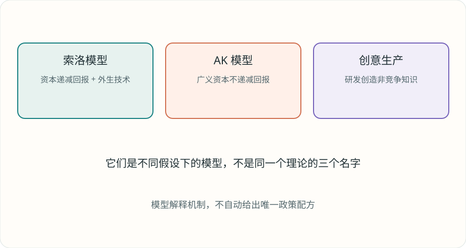
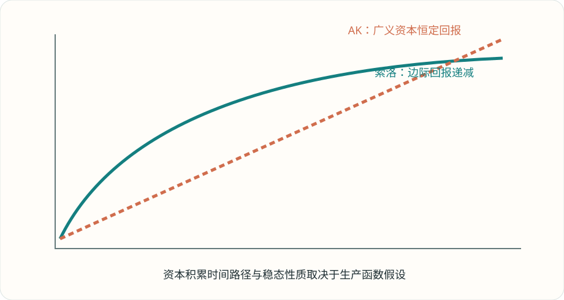
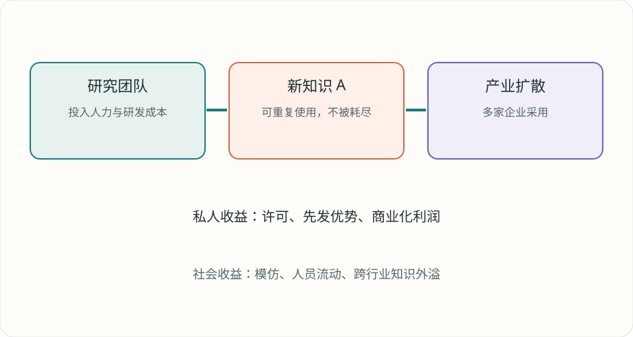
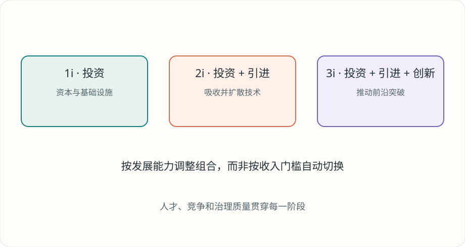

内生增长与制度
知识怎样成为生产要素？研发、教育、企业竞争和制度安排，如何把创新从偶然事件变成可持续的增长机制？
为什么有些经济体能够持续创新，而另一些只能不断追加机器？
索洛模型把长期技术进步放在模型外部。它能说明资本深化如何提高稳态收入，却不解释研究人员为何投入研发、企业为何承担创新风险、知识怎样从实验室进入工厂，以及制度如何影响这些选择。内生增长理论把知识、研发和人力资本纳入经济系统，研究创新活动本身如何被激励和约束。
本章要区分三个层次：AK 模型说明在某些广义资本设定下，资本积累可以维持人均增长；Romer 式创意模型解释非竞争性知识如何支持创新与外部性；制度和发展阶段分析则研究创新激励、技术引进、扩散和市场竞争的条件。它们不是一个可以互换的单一模型。

AK 模型怎样让资本积累持续推动人均增长？
AK 模型把物质资本、人力资本或其他可积累的生产性知识合并为广义资本 K。最简形式为：
若劳动人数以 n 增长，令人均广义资本 k=K/L，则连续时间下：
AK 模型的关键不是“资本没有任何限制”，而是把可积累的广义资本设定为具有不递减的社会回报。若模型把人力资本、知识或公共基础设施并入 K，必须解释这些投入为何不会像单一物质资本那样出现强烈边际递减。该设定有助于研究知识外溢，但不应被当作所有经济部门的普遍生产函数。

知识为什么既像商品，又不像普通商品？
一项设计、一段算法或一种科学原理可以被许多企业同时使用。知识具有非竞争性：一个主体使用某个创意，并不会在技术上耗尽它。但知识也不一定完全免费可得；专利、商业秘密、版权、合同和先发优势可能形成不同程度的可排他性。这种组合使创新具有双重性质：企业需要一定私人回报来承担研发成本，社会却可能从知识扩散中获得超出创新者收益的外部收益。
当新知识可以被多家企业采用时，创新收益不只来自发明者自己。竞争政策、知识产权制度、科研资助和基础教育因此可能影响研发的私人回报与社会回报。但过强排他会阻碍扩散，过弱排他又可能削弱部分私人研发激励，制度设计需要权衡。

人力资本和制度怎样影响知识生产与吸收？
研发人员数量并不等于创新能力。基础教育、科研训练、跨学科协作、企业组织能力、融资渠道、竞争压力和国际知识网络会影响研究人员能否把想法变成可扩散的产品与流程。Romer 的研究强调人力资本在研究活动中的作用，同时指出知识非竞争性会带来市场结构与外部性问题。
制度研究关注产权保护、合同执行、进入壁垒、政府能力和政治权力如何塑造投资激励。Acemoglu、Johnson 与 Robinson 的研究用历史差异建立制度与长期发展之间的经验论证，但这类识别依赖具体工具变量和历史假设；制度与收入也可能双向影响，不能把复杂的国家发展差异归结为一个制度评分。

中等收入经济体为什么需要从投资转向引进、扩散和创新？
世界银行《2024 年世界发展报告》把发展策略概括为按阶段递进的 1i、2i、3i：低收入阶段首先需要有效投资；进入下中等收入阶段后，要把外部技术和管理实践引进并扩散到更多企业；进入上中等收入阶段后，创新与前沿突破的重要性进一步提高。它是一个诊断框架，不是按收入门槛自动触发的机械政策菜单。
中等收入陷阱也不是某个国家只要跨过某一人均 GDP 数值就会被“困住”。世界银行报告指出，发展策略若长期停留在资本投资驱动，边际回报会下降；要实现持续升级，需要企业竞争、人才配置、技术吸收和创新能力共同变化。

交互实验：研发人员配置如何影响知识存量？
这是一个简化的知识生产函数实验，不是 Romer (1990) 的完整均衡求解。总人力资本规模固定为 100 个标准化单位，改变投入研发的比例，观察知识存量指数在 15 年中的变化；实验不模拟研发人员从生产部门转移后的工资、消费和产品市场均衡。
来源与进一步阅读
- Romer (1990), Endogenous Technological Change (NBER Working Paper 3210)
- Jones (1995), R&D-Based Models of Economic Growth
- Acemoglu, Johnson & Robinson (2004), Institutions as the Fundamental Cause of Long-Run Growth
- World Bank, World Development Report 2024: The Middle-Income Trap
- Jones (2022), The Past and Future of Economic Growth: A Semi-Endogenous Perspective